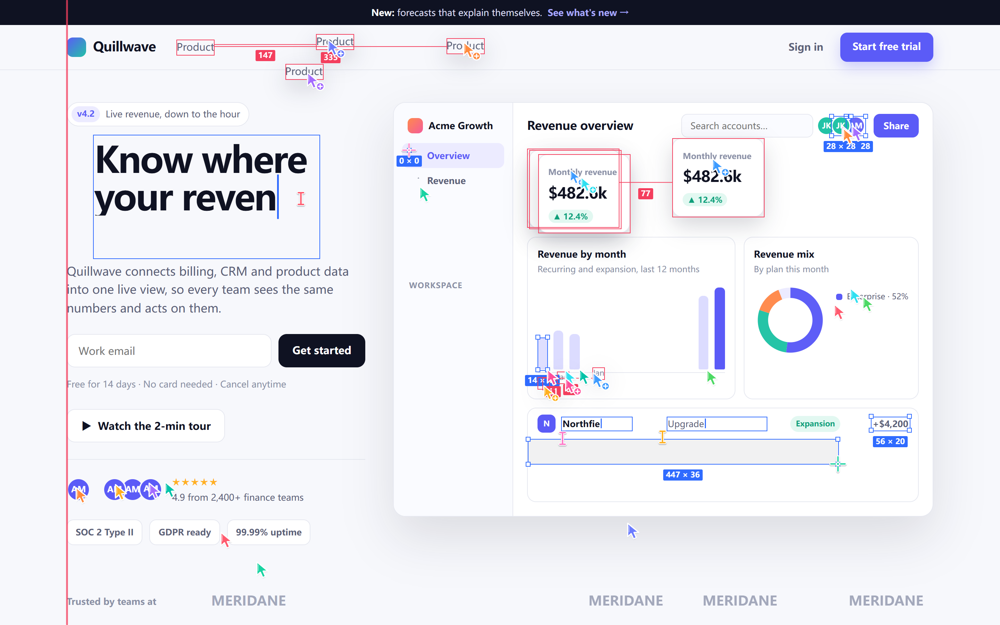
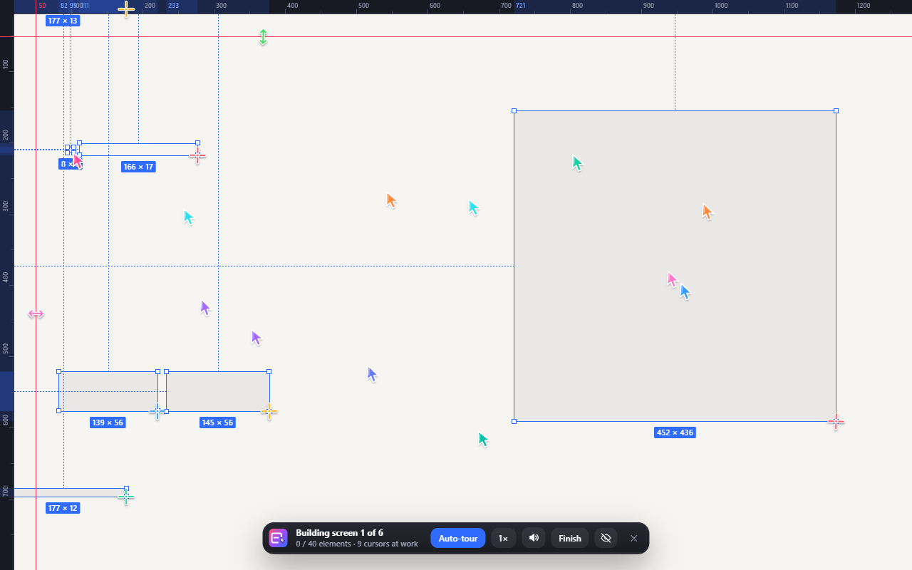
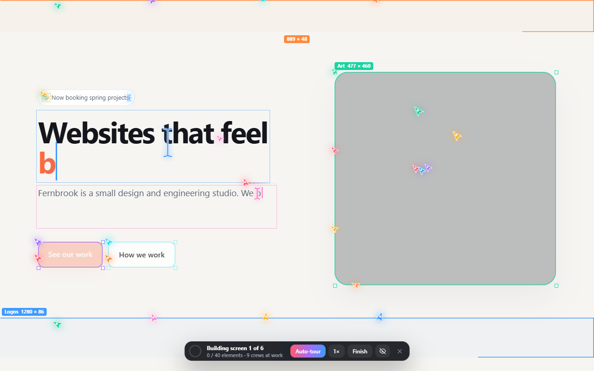
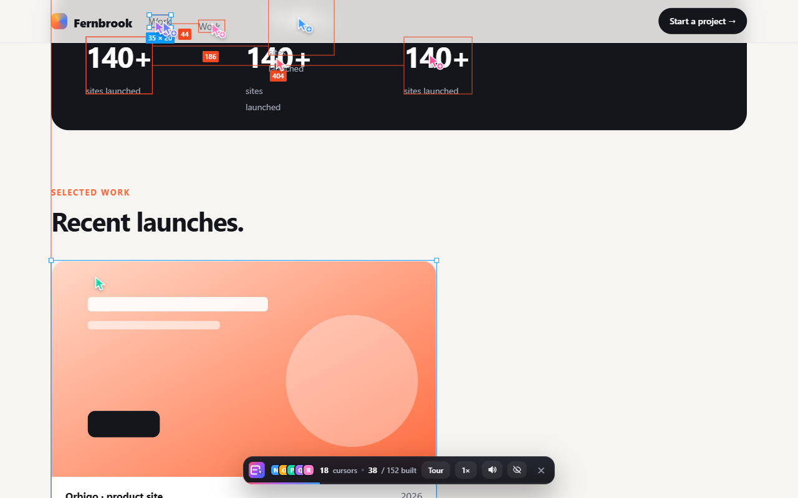
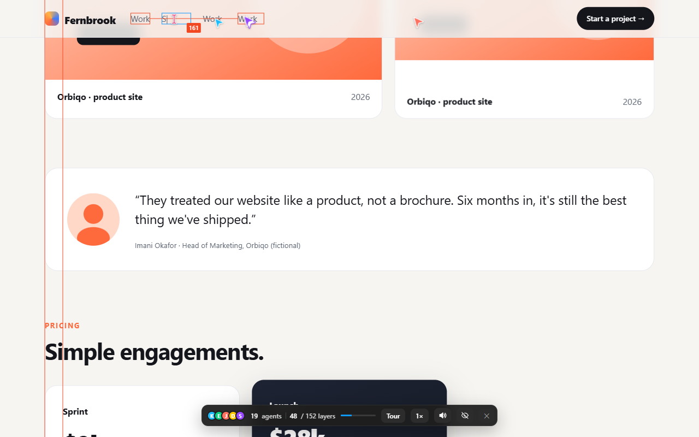
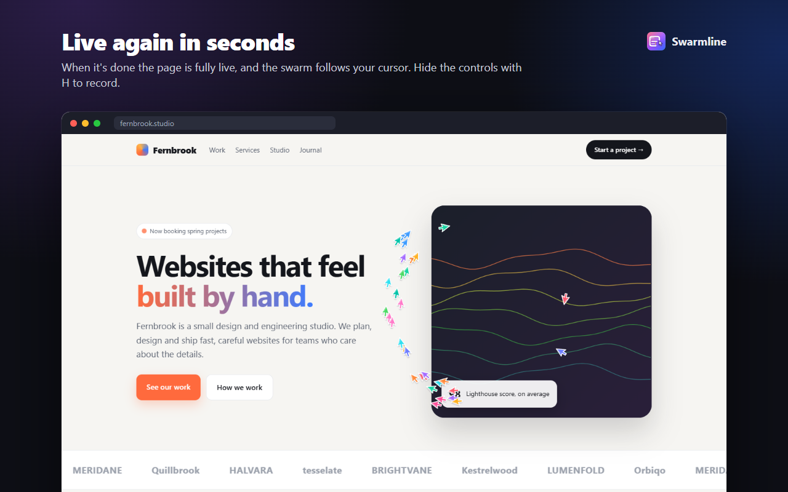

Watch any website build itself, live.
One click and the page becomes a blank canvas. Then a swarm of cursors builds it back like designers in a design tool: boxes dragged out, text typed and snapped to guides, repeated parts duplicated and edited.

A whole crew, building in front of you.
Everything appears in place on the real page, in the site's own colours and fonts, so the finished page is exactly the live site.
Drawn by hand
Every card, section and image frame is dragged out with a crosshair, with live sizes, selection handles, rulers and guides, then it fills in for real.
Typed and snapped
Text is typed letter by letter, big headlines grow into size, and text is nudged onto alignment guides until it snaps.
Build one, duplicate the rest
Cards, rows, links and icons are built once, Alt-dragged as copies with the spacing measured, then their words are selected and retyped.
Made for recording
Auto-tour scrolls down the page in one smooth glide as it's built, with a soft soundtrack. Hide the controls with H or drag them anywhere for a clean take.
Any website
Works with modern sites: sticky headers, scroll animations, video, app-style layouts.
Private by design
Runs only on the tab you start it on. Sends nothing, stores nothing, leaves the page exactly as it was.
From blank canvas to live page.
Real moments of Swarmline building a demo page for a fictional studio.





Three clicks to a launch-video moment.
- Add Swarmline to Chrome from the Chrome Web Store and pin it from the puzzle-piece menu.
- Open any website and click the Swarmline icon, or press Alt + Shift + L.
- Sit back: Auto-tour glides through the whole page on its own (T turns it off so you can scroll yourself). Pick 1× / 2× / 3× speed, and hit Finish (F) any time. Recording? Press H to hide the controls, or drag them out of the way. Esc exits.